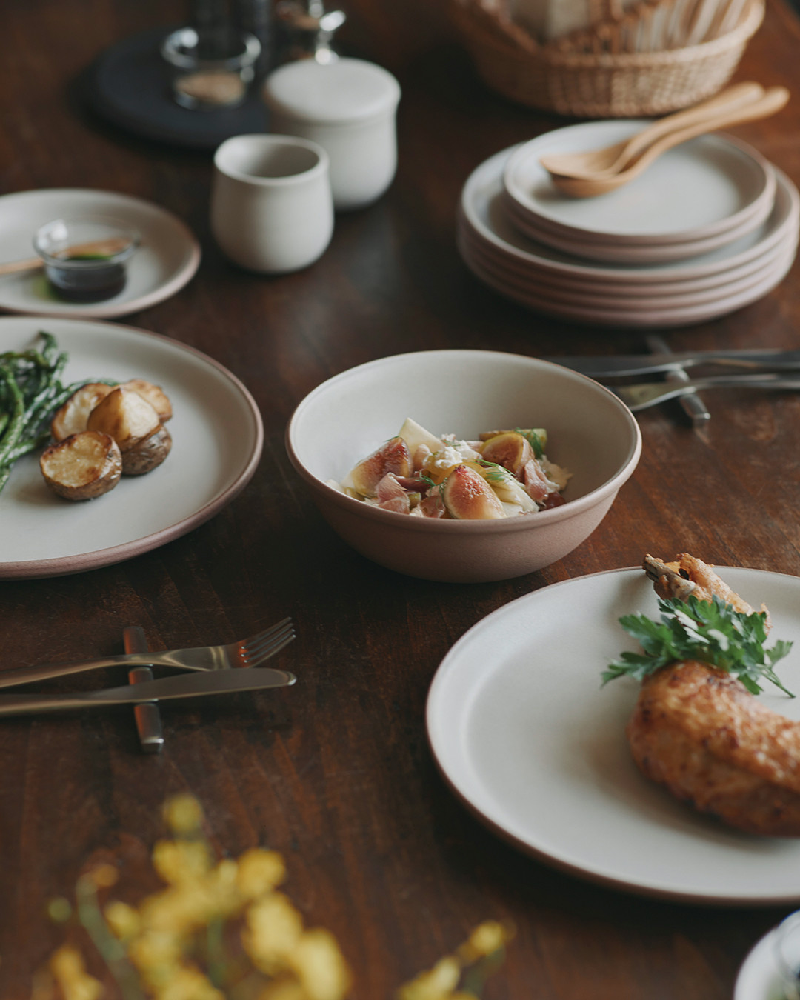
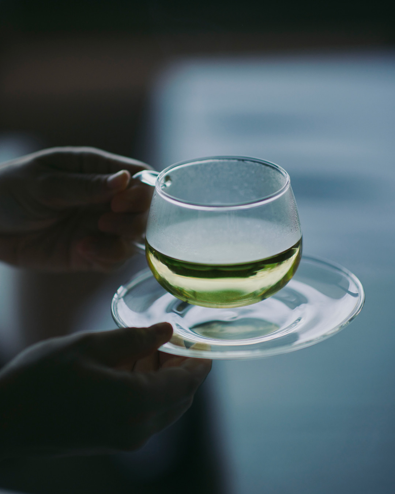
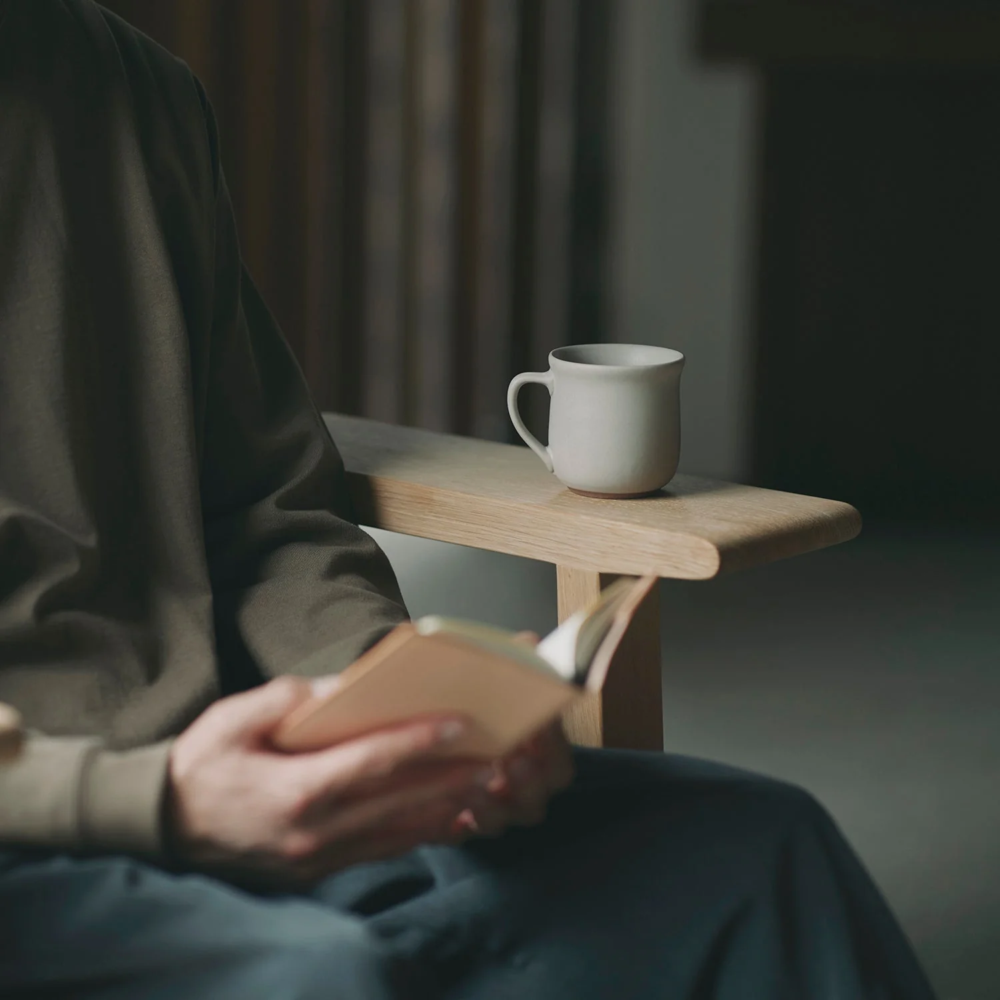

A Japanese Way of Living
在很多日本生活器物的设计里，我常常会看到一种克制的倾向：不急着成为视觉上的主角，而是让物品慢慢融入日常。
留白可以让空间多一点呼吸，而耐用，则让一个物品有机会陪伴我们更久。
KINTO 所呈现的，正是我很喜欢的这种安静感。
① Design That Doesn't Interrupt
好的设计，不会打断生活，而是自然地融入生活。
KINTO 给我的第一印象，是温暖、自然，也带着一点安静。
它没有急着吸引你的目光，而是静静地陪伴日常，让人在忙碌的时候，也愿意慢下来，留一点时间给自己。
它让人感受到，我可以放缓脚步，歇一歇，再继续前进。
柔和的配色，也让视觉感受变得更加舒缓。
KINTO 的产品很少刻意强调设计感。
相反，它们更像已经存在于生活很久的一部分。
无论是放在餐桌、书架，还是窗边，都不会显得突兀。

② Designed Around Everyday Feelings
KINTO 很重视拿起来舒服，而不仅仅是好看。
它会为日常生活带来轻松和节奏感。很多细节都会考虑使用者最自然的动作，例如杯缘的弧度、握把的形状，以及拿起时的重量。
有使用者分享，KINTO 的耐热玻璃拿在手里轻盈，却不会让人觉得脆弱；方形握把也能够自然固定手指，即使每天使用也很顺手。
也有人提到，无论倒入咖啡、茶，甚至只是白开水，都会让人更愿意慢慢享受喝水的过程。
这些细节，也许不会第一眼就注意到，却会在每天使用时慢慢感受到。
我后来才发现，KINTO 的官方网站并不只是展示产品外观，而是经常从拿起、握住、倒水、饮用这些自然的动作出发，去描述器物与人的关系。
对它来说，设计并不只是为了展示，而是为了每天使用时，那些几乎不会被特别注意到的舒适感。

③ Objects That Stay With You
有一位使用者分享，假日会特地拿出 KINTO 的玻璃杯泡茶或喝啤酒。对他来说，这并不只是因为杯子好看，而是它让平凡的一杯饮料，也多了一点仪式感。
很多人会一直使用同一个杯子很多年。
因为它实用，也因为它慢慢成为生活的一部分。
也许某一天，当你再次拿起它，会想起和家人一起吃饭的晚上、一个安静的下午，或是完成目标后奖励自己的一杯咖啡。
随着时间过去，这些细微的使用痕迹，也慢慢变成属于自己的故事。

Why Soft Archive Collects It
A Small Detail I Love
握住杯子的手、倒水的动作、喝下第一口咖啡的时候，都比杯子本身更重要。
What Caught My Attention
- 官方摄影经常使用自然光与大量留白，让器物本身保持安静。
- 产品总是出现在生活场景里，而不是只作为一个被观看的物件。
- 木头、玻璃、陶瓷与植物经常一起出现，让人感觉像把自然带进了家里。
- 我很喜欢它没有刻意营造“精致感”，而是让设计静静陪伴每一天。
Signature Piece
CAST Coffee Cup
杯身轻薄透明，拿在手里的存在感很低，却让人更专注于咖啡本身。
这或许就是 KINTO 所追求的设计：让器物成为体验的一部分，而不是主角。
Archive Information
| Theme | Pause | 暂停 |
| Theme Color | Natural White |
| Country | Japan |
| Location | Shiga |
| Founded | 1972 |
| Category | Home & Tableware |
| Materials | Glass · Ceramic · Stainless Steel |
Who It's For
- 🌿 喜欢慢慢享受生活的人
- ☕ 喜欢咖啡、茶与日常仪式感的人
- 🏡 喜欢安静、不过度设计的人
- 🎁 想寻找能够陪伴很多年的生活用品的人
有时候，真正让我们慢下来的，不是一杯咖啡，而是愿意静静坐下来，把它慢慢喝完的那段时间。
KINTO 也提醒了我：有些物品，会带着我们的记忆，静静地陪在身边很多年。
Sources
This archive is an independent editorial project by Soft Archive. Product names, trademarks and images belong to their respective owners. Soft Archive is not affiliated with KINTO.